| |
Filtering |
Make a filter:
A filter will catch any solids suspended in a liquid and filter them out.
By using a filter you can discover amazing things.You will need:
scissors, paper towel, funnel, pencil
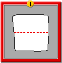
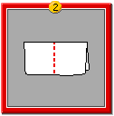
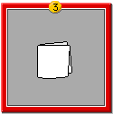
1. Fold paper towel sheet in half.
2. Fold in half again.
3. It should look like this.
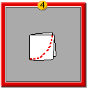
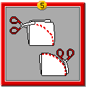
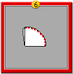
4. Trace a curved line like the one above.
5. Cut along the line.
6. It should look like this.
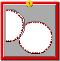
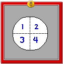
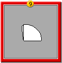
7. Open it.
8. Number the sections.
9. Fold it up again.
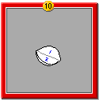
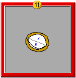
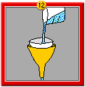
10. Open the folds to numbers 1 and 2.
11. Put into funnel.
12. Start filtering something.
How can you make other inexpensive science inquiry tools? See the Tools for Investigation cluster for more ideas.

|
|
|
|
|
|
|
|
|
|
|
|
|
 Gathered by topic |
 Connected together |
 Index of ideas |
 Search |
 Get out of my whey
Get out of my whey Need a funnel?
Need a funnel?